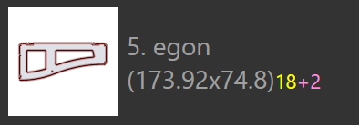

Indlejringstilstande
Indlejringsmaskinen i TecZone Laser kan effektivt sammensætte layouts fra et indlejringsjob. Man kan også tage et hvilken som helst af de indlejrede layouts (eller endda starte med en tom plade) og interaktivt tilføje dele til det, flytte og dreje dele.
Automatisk indlejring
I første omgang tilføjer der plader og dele til et indlejringsjob. Når der derefter skiftes til fanen Layouts, udføres der automatisk en indlejring. Efterfølgende kunne man ændre listen over dele eller ændre nogle indstillinger, og så er der nogle optioner for at genindlejre dele med varierende indstillinger.
Tilføjelse af flere dele til en plade
Lad os antage, at der er tilføjet et par ekstra dele til indlejringsjobbet, og de er endnu ikke indlejret. For at bruge indlejringsmaskinen til at placere disse dele på pladen, vælg først fanen layout[1], der ønskes brugt (ofte er det sidste plade, som sandsynligvis kun er delvist fyldt). Klik derefter på ikonet Nest fra værktøjslinjen til venstre, og vælg derefter Pack remaining sheet area automatically. [2]

De dele, der skal indlejres, placeres på det resterende område af pladen. Denne indstilling ændrer ikke nogen af de dele, der allerede er placeret på pladen, og den bruges undertiden til delvist at indlejre en plade manuelt, og derefter sætte indlejringsmaskinen til at afslutte resten af indlejringen. Billedet nedenfor viser nyligt tilføjede dele med en gul nuance, og man kan se, at de ældre dele ikke er blevet flyttet:

Omarrangér - restplade
Hvis der ikke er behov for at opretholde de ældre deles positioner, kan der fås bedre resultater ved at få indlejringsmaskinen om at omarrangere hele pladen. Vælg Rearrange to create a remainder sheet, og TecZone Laser vil genindlejre alle delene på pladen i et forsøg på at få en ren rektangulær restplade til højre, der kan bruges som råmateriale til en fremtidig indlejring.

Det kan ses, at pladen ovenfor har de samme dele som før, men pakket strammere, så en restplade kan skæres af til brug.
Omarrangér - brug hele pladen
Hvis restpladen er for lille til at være til nytte, er det nyttigt at sætte indlejringsmaskinen til igen at pakke pladen lidt mere løst, og stadig få alle delene på pladen, men øge afstanden mellem delene for at udnytte hele området på pladen. Det kan gøres ved at vælge Rearrange to use full sheet fra menuen:

Manuel indlejring
Åbn et layout til redigering enten fra fanen Layouts i Jobpanelet, eller ved at åbne den .fxlyt fil, der tidligere blev gemt.
Tilføjelse af dele
Der kan tilføjes dele til layoutet ved at klikke på knappen Tilføj på venstre værktøjslinje. En liste over alle delene i indlejringsjobbet vises:

Et klik på en del fra listen tilføjer den til pladen (indlejringsmaskinen bruges til at forsøge at finde en optimal position for delen, men det kan ændres senere). Delforklaringerne bruger forskellige farver til forskellige betydninger som angivet nedenfor:
|
12 dele indlejret (påkrævet mængde) |
|
2 færre dele indlejret, end der kræves |
 |
18 dele påkrævet, 20 indlejret (+2) |
|
Nødvendig mængde på 24 dele indlejret |


Når musen bevæges over dele på listen over dele, beregner TecZone Laser straks en god placeringsposition for delen og indsætter den midlertidigt i pladen med blå farve, så man kan vurdere, om det ville være en god pasform. Der kan derfor placeres et antal dele hurtigt på pladen ved blot at bevæge musen over dem og klikke.

| Når først delene er placeret på pladen, kan de flyttes, drejes eller gentages ved brug af Placeringspanelet. |